Начнём с исторических памятников, которые связаны с историей России
Памятник карете Екатерины II
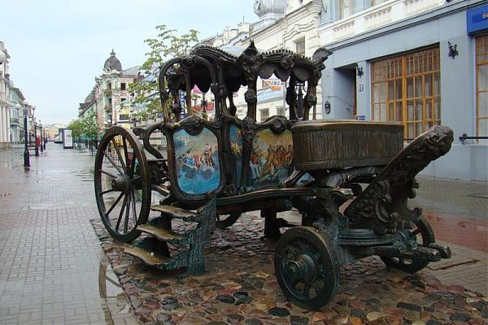Екатерина Великая посетила Казань весной 1767 года. Величественная флотилия двинулась в путешествие по Волге из Твери. Известно, что императрица задержалась в Казани на пять дней, что превышает срок пребывания в других городах этого маршрута. Письма и летописи однозначно свидетельствуют, что царственная особа осталась довольна оказанным ей приемом и осталась под большим впечатлением от Казани.
Во время визита императрица посещала церковные службы, ежедневно принимала представителей дворянства, почтила своим присутствием народные гуляния в честь праздника Живоначальной Троицы. Царственной рукой раздавались щедрые дары, среди которых две бриллиантовые короны для Богородицкого монастыря.
Во время пребывания в Казани, Екатерина II активно занималась балансом законов и условий, с учетом многонационального населения. По ее указанию было разрешено возвести в городе новые мечети и остановлено насильственное обращение в православие мусульман. Завремя правления императрица приняла ряд законов уравнивающих положение представителей различных вер. Также по распоряжениюЕкатерины был открыт Казанский театр.
Карета Екатерины 2 в дар Казани 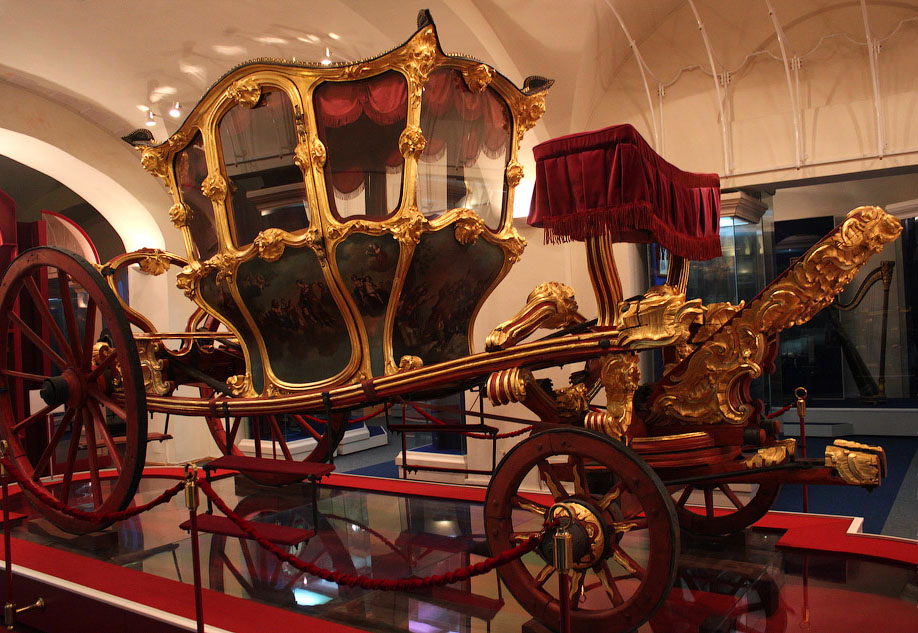Для путешествия императрицы было подготовлено 300 дорожных колясок. В одной из них, роскошной и просторной, правительница осматривала столицу Татарстана. Богатое убранство кареты и ее внушительные размеры полностью соответствовали высокому статусу гостьи. Отбывая карету Екатерина 2 оставила в Казани, как подарок архиепископу Казанскому.
В 1889 году Карета была передана городским властям. Многие свидетельства памятного путешествия царственной особы не сохранились. Утеряны искусно выполненная лучшими тверскими мастерами галера и кровать с главного судна возглавляющего флотилию. Но подлинник кареты до сих пор хранится в государственном музее Казани, как жемчужина экспозиции посвященной императрице.
Памятник жертвам политических репрессий
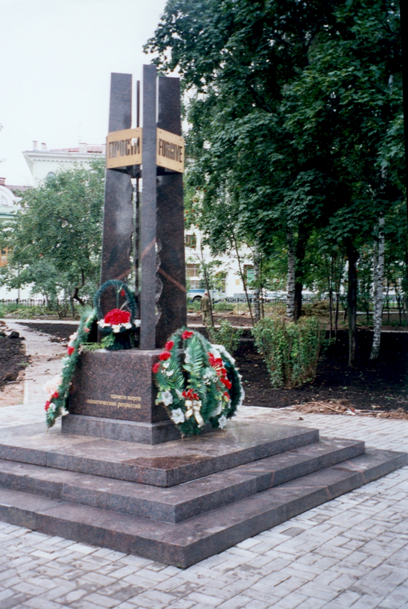Первый камень под мемориал, что расположен в Ленинском садике, был заложен в 2001 году, а открытие состоялось лишь в 2004 году в октябре месяце. Проект, по которому воздвигался памятник, был разработан скульпторами В. Бурлаковым, И. Аксеновой. Посвящено творение жертвам Сталинских репрессий.
Монумент состоит из четырех стел, выполненных из гранита, они направлены во все стороны света. Основание из черного гранита, а верхние части стел соединяются между собой табличками из бронзы, на которых можно прочесть "прости", причем на четырех языках: русском, английском, татарском и арабском.
С внешней стороны гранитные стелы тщательно отполированы. Зато с внутренней они зазубрены – это является символом искалеченных людских жизней, стойкость их духа.
Именно Казань является первым городом СССР, в котором установили памятник репрессированным. На сегодняшний день у подножия монумента можно всегда увидеть свежие цветы: молодое поколение чтит память жертв, а ветераны вспоминают те непростые времена.
Памятник Карлу федоровичу Фуксу
Карл Фукс родился 18 сентября 1776 года в Герборне (Нассау, Германия). Помимо него в семье было 20 детей.
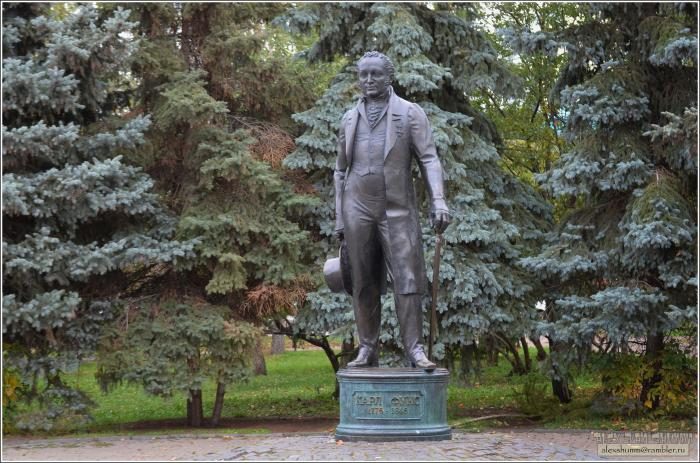Первоначальное образование он получил в родительском доме. В 1793 году Фукс поступил в Герборнское высшее училище (академию), в которой его отец — Иоган Фридрих Фукс — был профессором богословия и ректором. Там он начинает слушать лекции по разным медицинским наукам, но более полное знакомство с ними происходит во время двухлетнего пребывания в Гёттингенском университете.
В 1798 году он получил степень доктора медицины и хирургии в Марбургском университете, защитив диссертацию, в ней он утверждал о невозможности быть хорошим врачом без основательного и широкого общего образования.
По возвращении в Санкт-Петербург осенью 1805 года, Фукс был назначен профессором в недавно созданный Императорский Казанский университет. Это назначение произошло по рекомендации министра народного просвещения и попечителя Московского учебного округа М. Н. Муравьёва, находившегося в постоянных сношениях с Гёттингенскими учёными, среди которых имя молодого Фукса пользовалось уже заслуженной славой. По другой версии, Фукс, побывав в Казани, сам вернулся в Петербург с прошением назначить его в новый университет.
Ныне памятник Фуксу находится в одноимённом садике(парке). За ним ведётся постоянный уход, и любой желающий может прийти и посмотреть на великого деятеля наук.
Следующие памятники относятся к Казани или Татарстану
Памятник татарскому поэту - Мусе Джалилю
Памятник Мусе Джалилю — монументальный комплекс, установленный в 1966 году на площади 1 Мая в Казани в память о Герое Советского Союза, лауреате Ленинской премии — поэте-патриоте Мусе Джалиле, участнике антифашистского подполья, казнённого в нацистской тюрьме в 1944 году.
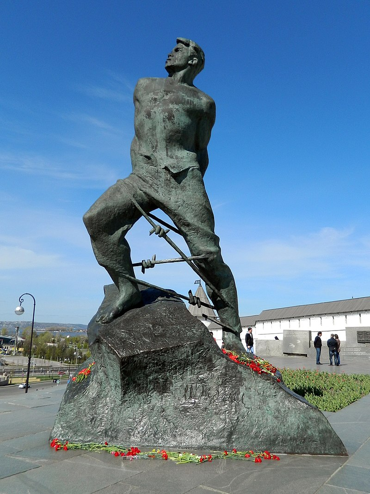Памятник расположен у южного фасада казанского кремля напротив зданий Городской думы и Национального музея Республики Татарстан близ места, где в 1894-1918 годах был памятник Александру II.
Открытый 3 ноября 1966 года (в год празднования 60-летия со дня рождения Мусы Мустафаевича Залилова) памятник представляет собой пространственно-развитый комплекс, состоящий из трёх основных частей: площадки-стилобата, скульптуры и гранитной стенки. Авторы композиции: скульптор В. Е. Цигаль и архитектор Л. Г. Голубовский.
В 1974 году памятник Мусе Джалилю был включён в список памятников культуры РСФСР, подлежащих охране как памятники государственного значения.
Гранитная площадка трапециевидной формы, приподнятая над уровнем земли, упорядочивает неровный рельеф площади с большим перепадом высоты. В центре располагается цветник, в уменьшенном виде повторяющий конфигурацию площадки. По боковым сторонам поставлены скамьи из полированного гранита.
Дважды в год — 15 февраля (день рождения Мусы Джалиля) и 25 августа (годовщина казни «группы Курмашева») у памятника проводятся торжественные митинги с возложением цветов.
Скульптура возвышается на 7,9 м от малого основания трапеции. Пластика фигуры отличается монументальной укрупнённостью форм, завершённостью и чёткостью моделировки.
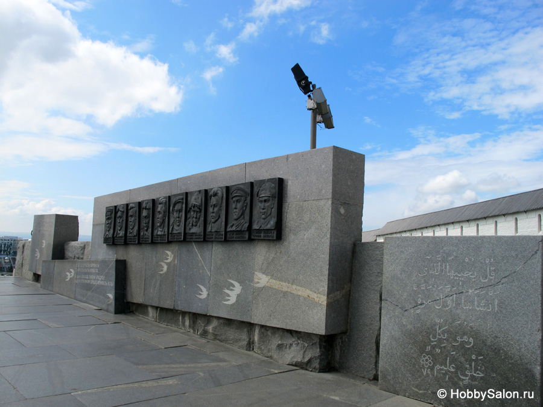По длинному основанию трапеции площадки возведена стенка из гранитных блоков, частично полированных, частично лишь слегка обработанных. На блоках — стилизованные изображения ласточек и три цитаты из стихотворений Мусы Джалиля (на татарском и русском языках).
25 августа 1994 года в память о соратниках Мусы Джалиля и в связи с 50-летием со дня их гибели в тюрьме Плётцензее, на гранитной стенке был открыт посвящённый им барельеф. Он представляет собой портреты десяти членов татарского подполья: Гайнана Курмашева, Абдуллы Алиша, Фуата Сайфульмулюкова, Фуата Булатова, Гарифа Шабаева, Ахмета Симаева, Абдуллы Батталова, Зинната Хасанова, Ахата Атнашева и Салима Бухарова.
Памятник загадке Шурале
Авторство композиции «Загадки Шурале» принадлежит казанскому скульптору А. Миннуллиной. Бронзовая композиция представляет собой сидящих на бревне героев сказки Батыра и Шурале (мифическое существо татарских сказок, горбатое с небольшим рогом на лбу, любит шутить и проказничать).
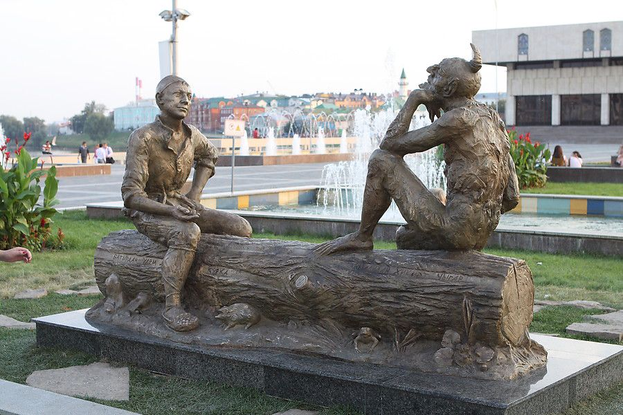На торжественной церемонии открытия памятника присутствовал президент Татарстана Рустам Минниханов, а так же видные государственные и культурные деятели, жители и гости столицы.
Создана скульптурная композиция по мотивам сказки великого народного поэта Габдуллы Тукая. Во время открытия скульптуры было сказано, что история Казани полна легенд, тайн и добрых сказок, создателям скульптуры приятно подарить городу, и его жителям памятник «Загадки Шурале». Более того, открытие скульптурной композиции было приурочено к празднованию 125-летия Габдуллы Тукая. Таким образом, увековечена память о том, на чьих сказках выросло не одно поколение.
У памятника тут же появилось поверье, каждому, кто к нему придет, он подарит счастье и отличное настроение.
Памятник Садри Максуди
Родился в семье татарского муллы в д. Ташсу Казанского уезда Казанской губернии (ныне Высокогорский район Татарстана, Россия). Происходил из казанских татар. С 1888 года учился в медресе Апанаева в Казани. В 1893 году в течение года учился в бахчисарайском медресе Исмаила Гаспринского, где в это же время преподавал его старший брат Ахмедхади Максуди. После смерти их отца братья в 1894 году возвращаются в Казань, где Ахмедхади пишет прошение о зачислении своего младшего брата в русскую учительскую школу, которую Сарди закончил в 1901 году.
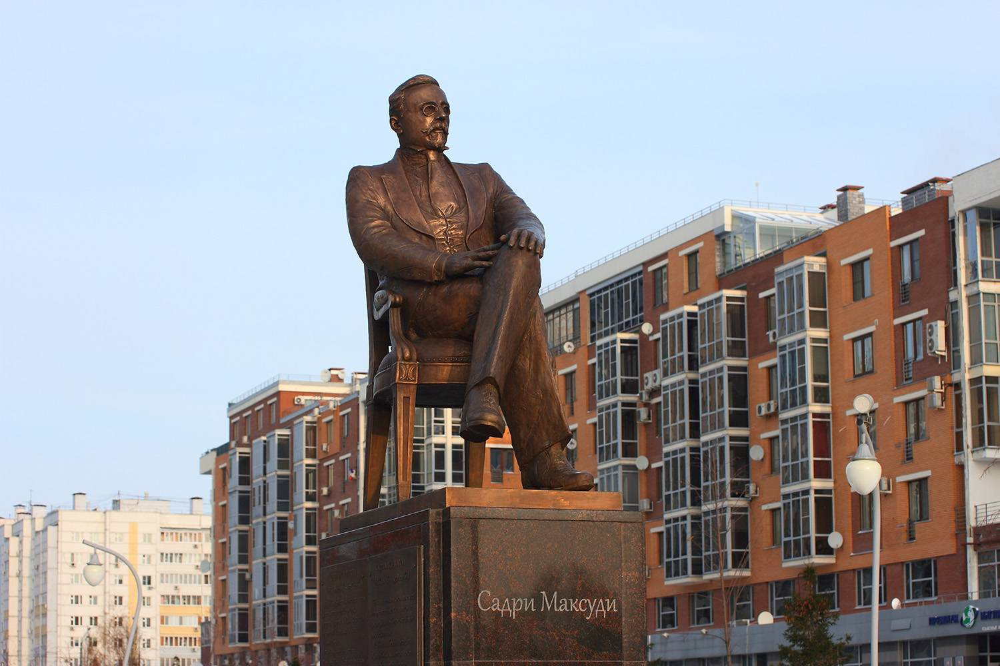В 1906 году вернулся в Казань. Включился в политическую жизнь, был избран в созданный в ходе 3-го Всероссийского мусульманского съезда (Нижний Новгород, август 1906) ЦК партии «Иттифак аль-Муслимин». Депутат второй Государственной Думы от Казанской губернии. Был избран членом бюро думы, участвовал в поездке делегации Думы в Англию. После роспуска второй думы был избран в Думу третьего созыва.
5 января 1918 года Садри Максуди был избран председателем Милли Идарэ, органа национально-культурной автономии мусульман тюрко-татар Внутренней России и Сибири. После захвата территории Казанской и Уфимской губерний большевиками эмигрировал в Финляндию.
Этот человек являлся как научным так и политическим деятелем, который совершил многое для татар и мусульман. Ныне, с 2016 года, ему установлен памятник в построенном в его честь сквере "Стамбул"
Это особенные памятники
Конь в пальто
- Кто?
- Конь в пальто!
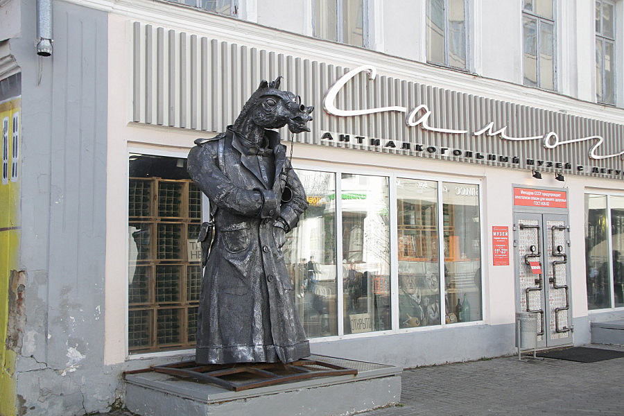Знакомо? Конь в настоящем пальто. В Казани решили продемонстрировать эту картину, установив громадную скульптуру.
Речь идет о фигуре коня-чекиста в длиннополой кожаной куртке, которая в конце лета 2018 года нашла свое место на пешеходной улице Баумана.
Среди приевшихся фонтанов и архитектурных сооружений, ожидаемых музеев и сувенирных лавок, памятников Федору Шаляпину, Казанскому коту и Габдулле Тукаю, конь в пальто возле музея самогона не мог долго оставаться не оцененным по заслугам
На боку трехметрового животного есть кобура для маузера, на нос надето аккуратное пенсне, а на шею - галстук-бабочка. Интеллигент, не к чему придраться! Однако некоторые казанцы все-таки считают коня лишним в городе. В общем-то не стоит удивляться расходу мнений. Всё-таки сейчас мы живём на стыке совершенно по-разному воспитанных поколений.
Памятник татарскому пирожку "Эчпочмак"
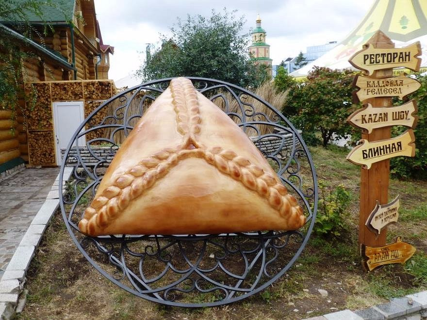Памятник эчпочмаку — необычный национальный символ Татарстана, поставленный в 2016 году, но уже завоевавший популярность. Полностью повторяет съедобный пирожок своей формой и цветом. Единственное отличие — большие габариты. Установлен в честь Дня города в качестве подарка жителям.
Туристы верят, что если перед тем, как съесть её загадаешь желание, то оно сбудется. Ведь так написано на табличке под достопримечательностью.
Достопримечательность расположена на территории национального татарского комплекса «Туган Авылым» напротив Кукольного театра. Место стилизовано под типичную татарскую деревушку с деревянными домами, клумбами и резными ставнями на окнах. В комплексе работают кафе, ресторан, дом ремесленника, различные детские развлечения, баня, ярмарка. Там можно купить сувенир и отведать национальные блюда.
Памятник трамваю
Памятник первому трамваю Казани установили в 2010 году, к юбилею Победы в Великой Отечественной войне. На самом деле это не совсем памятник, а скорее музейный парк, так как в нем демонстрируются три старинных вагона.
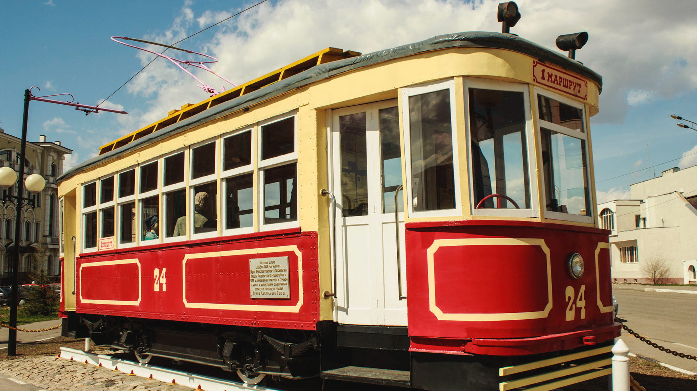Музей трамваев под открытым небом в Казани находится у станции метро «Суконная слобода», на Аллее Славы, которая начинается от улицы Нурсултана Назарбаева (бывш. ул. Эсперанто) и тянется вдоль Петербургской улицы. Почти целый век трамваи пылились в запасниках казанского трамвайного депо № 1, пока их не отыскали и не отремонтировали для создания выставки.
Первый трамвай на аллее под номером 24, на онлайн-картах часто отмечен как трамвайный вагон X, активно использовался до 1937 года и прославился благодаря водителю Ивану Кабушкину — Герою Советского Союза, посмертно награжденному орденом за мужество и героизм в борьбе с фашистами. Кабушкин, знаменитый подпольщик по прозвищу Жан, водил трамвай с 1932 года. Сегодня его вагон считается частью мемориала воинской славы.
В каждой кабине за штурвалами сидят манекены в форме, изображающие водителей. Доступ к трамваям открыт для всех желающих. Можно даже зайти внутрь салона, чтобы хорошо все рассмотреть. Вечером Памятник первому трамваю Казани подсвечивается иллюминацией.
Не исторические, но увлекательные памятники
Скульптурная композиция "На озеро"
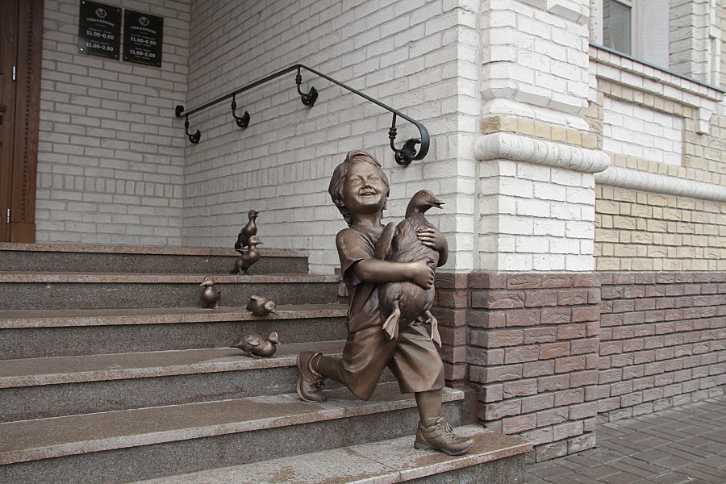Эта композиция относится к арт-объектам и является совершенно открытой и свободной для посещения, хоть и была установлена частными лицами вблизи их ресторана. Она была установлена в 2018 году в предверии чемпионата мира по футболу. Это сразу становится земетным если приглядеться - на мальчике надета футболка с символикой чемпионата.
Она выполнена из бронзы и состоит из шести фигур: мальчика с уткой на руках и пяти утят, что бегут за ним по ступеням.Главный герой — улыбчивый мальчик, который радостно несет маму-утку к пруду, что находится в центре парка через дорогу. А утята торопятся за своей мамой.
Стоит отметить, что история эта отчасти правдива. Действительно была такая утка с утятами, которая отложила яйца во дворе дома номер 13 по улице Дзержинского. Когда утята вылупились, пришлось перекрывать проезжую часть, чтобы птица могла перевести детенышей в пруд парка «Черное озеро». Этот случай и вдохновил заказчиков (они же владельцы ресторана Руслан Шарафутдинов и Артем Акчурин — прим. Т-и) на создание этой скульптурной композиции.
Часы в Арабском стиле
Памятник часам в арабском стиле находится на центральной площади Тукая, что в Казани, установлены они туда были в 1999 году. Представлен этот памятник не просто в виде часов, а в виде целой невероятно красивой скульптуры, которая сделана из бронзы.
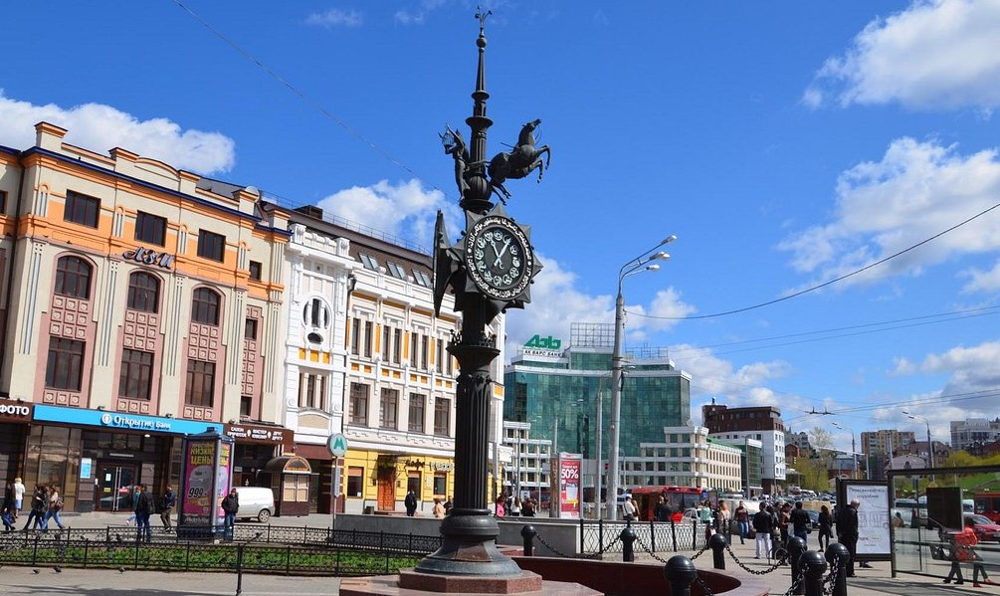Что касается непосредственно памятника, то на верху него встроены часы, которые расписаны арабскими буквами, выше него находится мальчик, который дудит в дудку, пегас, который управляет повозкой и муза, которая возвышена над мальчиком. По кругу циферблата и по бокам смотрящих вписаны строи великого поэта Габдулы Тукая, именно ему посвящен данный памятник, ему, великому человеку для всей Казани.
Расположен этот памятник именно в начале улицы Баумана и эти часы являются своеобразным ориентиром для всех влюбленных и встречающихся, так же они пользуются большой популярностью среди туристов, которые проживают в одном из лучших отелей Казани, возле часов часто фотографируются и снимают видео.
Этот памятник по всему дизайну и архитектуре является одним из самых сложных, так как все детали и персонажи выполнены с ювелирной аккуратностью, так же сами часы находятся на высокой колонне, что делает их заметными даже с большого расстояния.
Конь-страна
В Казани, на улице Баумана, появилась скульптура «Конь-Страна» финского скульптора Рафаэля Сайфулина. На спине бронзового коня на постаменте установлена татарская деревня, на его груди — надпись «Бәхет сиңа» («Счастья тебе»). Автор идеи установки данного объекта рассказал, что скульптура — это не архитектурное украшение города, а способ признаться в любви народу и стране.
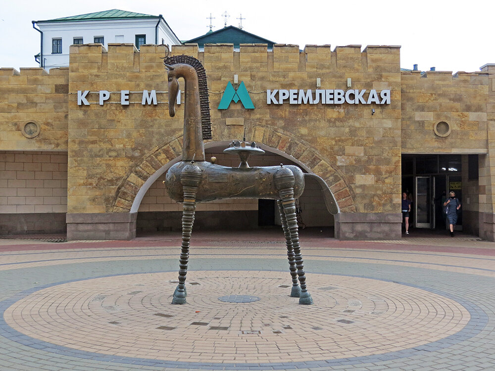Установку скульптуры одобрили в 2016 году — тогда жители Казани высказались за появление статуи «Конь-Страна» на улице Баумана. Художник предлагал установить ее вблизи основного входа на станцию метро «Кремлевская», которая оставалась открытой со дня открытия станции метро и по сей день. Однако в управлении архитектуры и градостроительства посчитали, что там ее разместить невозможно и нецелесообразно: рядом находится «Зилант», памятник Благотворителю, Кремль. В последствии коня разместили рядом со входом в метро, но уже другим - выходящим напрямую на улицу баумана.
Однако, далеко не каждый житель Казани оценил это так называемое "чудо". Нашлись те, кто был крайне недоволен совершенно необычным памятником, посчитав оскорбительным то, такую "диковинку" расположили недалеко от великого и древнего казанского кремля. Многие жаловались на памятник, другие - наоборот, отстаивали его. В итоге все остались при своих мнениях, а правительство решило памятник оставить.